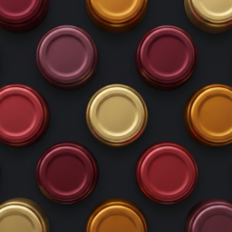

Une photo, la fiche se remplit.
L'étiquette suffit : nom, domaine, cuvée, millésime, appellation, région. La fiche arrive prête à vérifier, et chaque champ se corrige d'un toucher.

VinariumUne photo de l'étiquette suffit. La fiche se remplit, chaque bouteille trouve sa place, et la cave se partage avec le foyer.
L'essentiel, écran par écran.
L'étiquette suffit : nom, domaine, cuvée, millésime, appellation, région. La fiche arrive prête à vérifier, et chaque champ se corrige d'un toucher.
La cave se range par rangée et par colonne, comme le vrai meuble. A1, B3 : la bouteille se retrouve sans ouvrir la porte.
Les vins ajoutés, mois par mois, avec leur domaine, leur millésime, leur région et leur prix. Favoris, cadeaux et conseils à un toucher.
Sa case dans la cave, son domaine, sa cuvée, son millésime, son appellation et sa région. Et sur la carte, le lieu où la bouteille a été découverte.
Les bouteilles en cave, leur valeur, les vins prêts à déguster, les favoris et les derniers mouvements.
Chaque entrée et chaque sortie, datée, avec la case de la bouteille. Rien ne se perd entre deux dîners.
Chaque bouteille trouve sa place, le reste se fait tout seul.
La grille reproduit le meuble : rangées, colonnes, capacité. Une bouteille se place d'un toucher, passe d'une case à l'autre, et l'accueil affiche le remplissage de la cave.
D'après leur période de garde, l'accueil remonte les bouteilles à ouvrir bientôt, avant qu'elles ne passent leur apogée.
Champagne, porto, whisky, rhum, saké, bière ou cidre : chaque boisson a sa place dans la cave, avec les informations propres à son type.
Nom, domaine, cuvée, région, millésime ou personne. « pucelles » trouve un Puligny-Montrachet Les Pucelles, « champagne » trouve les effervescents, accents oubliés compris.
Pas d'étiquette sous la main ? Une description suffit, par exemple « Chablis 2019 de William Fèvre », et la fiche se remplit de la même façon.
Des étoiles, un commentaire, la date et les personnes présentes. Un cœur marque les vins qui ont marqué. Chaque bouteille ouverte laisse un souvenir.
Un code d'invitation suffit. Chacun range, déplace ou déguste les bouteilles de la cave commune, et garde ses notes, ses favoris et son journal pour lui.
La trace des vins offerts, reçus ou conseillés par un ami, avec le nom de chacun. Le jour d'ouvrir la bouteille, on sait qui remercier.
Le lieu peut s'enregistrer au moment du scan : la fiche rappelle sur la carte le restaurant ou le domaine où la bouteille a été goûtée.
Jusqu'à cinq photos ou documents par vin, dans « Pièces jointes » : la facture, la fiche technique du producteur, la contre-étiquette.
Avec Premium, chaque bouteille scannée reçoit une estimation de son prix, sa période de garde et sa région.
Une cave par meuble ou par pièce, chacune avec son nom et sa grille, et une bouteille passe de l'une à l'autre. Avec Premium.
Pas de publicité, pas de traçage. Toute la cave s'exporte et se réimporte depuis les Réglages, dans « Profil ».
La photo est lue par une intelligence artificielle qui en tire le nom, le domaine, la cuvée, le millésime, l'appellation et la région. La fiche arrive à vérifier avant d'entrer dans la cave, et chaque champ se corrige. Une étiquette illisible ? Une phrase suffit, ou la saisie à la main.
Gratuit, avec 20 scans offerts à l'ouverture du compte puis 5 par mois. La cave, le journal, la recherche et le partage en foyer sont gratuits et sans limite, et une bouteille s'ajoute toujours à la main. Premium, 2,99 € par mois ou 24,99 € par an avec 7 jours d'essai, lève la limite de scans, estime le prix et la garde, et ouvre plusieurs caves.
Le partage se lance depuis les Réglages, avec un code d'invitation à transmettre. Chaque membre du foyer range, déplace ou déguste les bouteilles de la cave commune, depuis son propre iPhone et son propre compte.
Les bouteilles placées dans la cave commune, avec le nom de la personne qui les a rangées. Les notes de dégustation, le journal et les favoris de chacun restent privés.
Connexion avec un compte Apple, e-mail masquable. La cave est hébergée sur Google Cloud, en Europe. La photo d'une étiquette sert à la lire, et reste en cache sans lien avec son auteur. Pas de publicité, pas de traçage, et toute la cave s'exporte depuis l'app. Le détail est dans la politique de confidentialité.
iPhone, iOS 26. En français, anglais, allemand, espagnol, italien, japonais ou portugais, selon la langue du téléphone. Les étiquettes sont lues dans toutes les langues.
La cave, le journal et le partage sont gratuits et sans limite. Seul le scan est compté.
| Gratuit0 €Sans limite de temps. | 7 jours d'essai sur l'annuelPremium2,99 € / moisou 24,99 € par an | |
|---|---|---|
| Scan d'étiquette | 20 offerts, puis 5 / mois | Illimité* |
| Prix, garde et région estimés | ||
| Plusieurs caves | ||
| Cave en grille et journal | ||
| Dégustations, favoris et cadeaux | ||
| Partage en foyer | ||
| Ajout à la main | Illimité | Illimité |
| Publicité | Aucune | Aucune |
* Usage raisonnable : 100 scans par mois. Abonnement géré et résilié dans l'App Store.